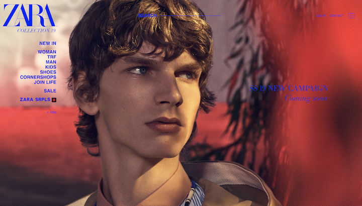

<!DOCTYPE html>
<html lang="en">
  <head>
    <title>sierra glicker</title>
    <link rel="shortcut icon" href="" />
    <meta charset="utf-8">
    <meta name="description" content="" />
    <meta property="og:image" content=""/>
    <meta name="viewport" content="width=device-width, initial-scale=1" />
    <script src="https://ajax.googleapis.com/ajax/libs/jquery/3.3.1/jquery.min.js"></script>
    <link href="assets/css/styles.css" media="all" rel="stylesheet" />
    
  
  </body>
  </html>

  <body ALIGN=center></body>

  <body>
     
  <h1> NAVIGATION</h1>
   
  <hr>
  <div>
    <h2>1</h2>
     <h3><a href="https://www.zara.com/us/en/woman-l1000.html?v1=358501" target="_blank">zara.com</a></h3>
     
     
     <ul>
        <li>This is a website for the clothing brand ZARA
        The website houses clothing items than can be purchased online and in store
         I think for a clothing website this brand makes the experience overwhelming for the user. The navigation system overlaps the images of the clothing. For a website focused on selling the clothing there should be more of a focus on the pieces themselves then the aestetics or navigation of the website. There should be a simple layout since most users may not want type shouting at them as they shop, simply focusing on the content wanting to be sold.
         
     </ul>
</div>

<hr>

<div>
    <h2>2</h2>
     <h3><a href="https://flydigital.co.uk" target="_blank">flydigital.com</a></h3>
     
     
     <ul>
         <li>This website for a portfolio showing off this artists skills and work.
          The website is used to advertise his freelance web design services.
         The navigation stystem on this website in a paper airpline on a fixed path that glides down the screen as you scroll. This is affective in that its a cute and quirky way to show off his style as an artist and his skills in web design. </li>

         
     </ul>
</div>

<hr>

<div>
<h2> 3</h2>
<h3><a href="http://www.michaelferire.com/portfolio" target="_blank">michaelferire.com</a></h3>


    <ul>
      <li>This website is a portfolio for Michael Ferire, an artist. 
        This website is his portfolio used to show off his work and skills. 
        This website has a very interesting navigation system that puts the navigation into the hands of the viewer.
       In the lower right corner you can select the way in which you want to view the images alterig the layout deciding
       on how many images that can be viewed at one time. This is effective because some images you may want to get a closer view of while 
       also giving the option to see the collection as a whole.

      </li>
   </ul>
</div>


     

      
     
   </body>
  
    </body>
   </html>


  

  


